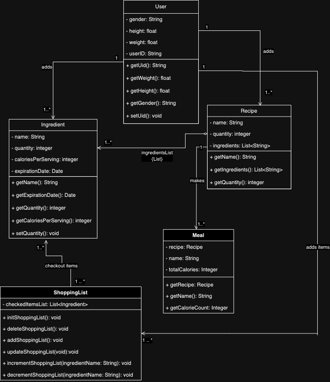
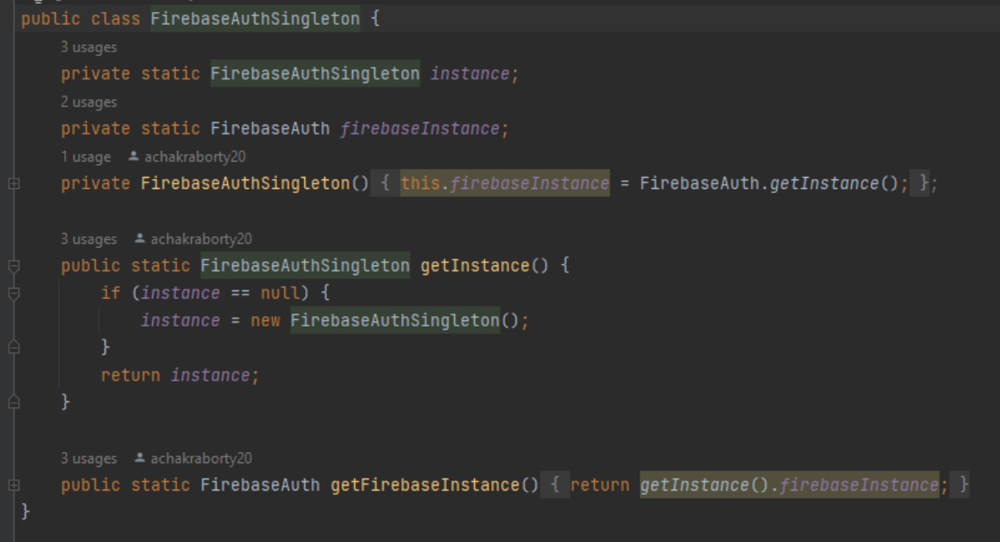
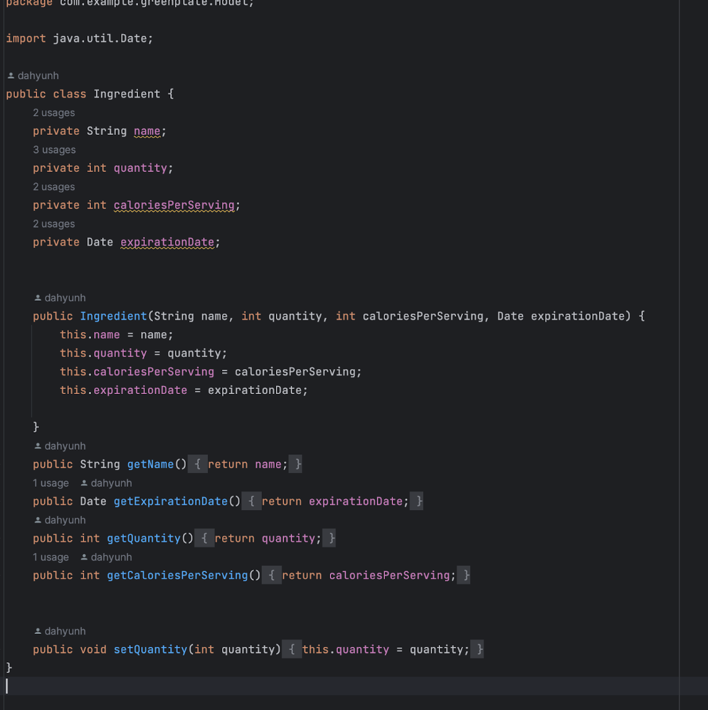
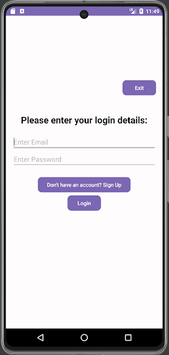
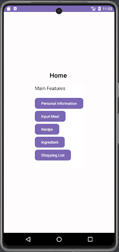
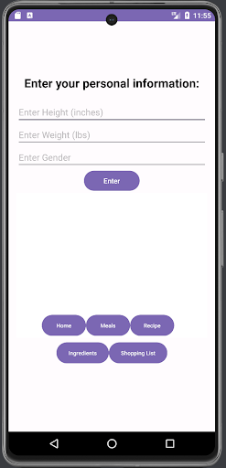
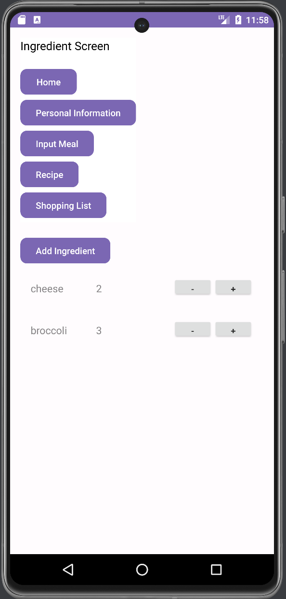
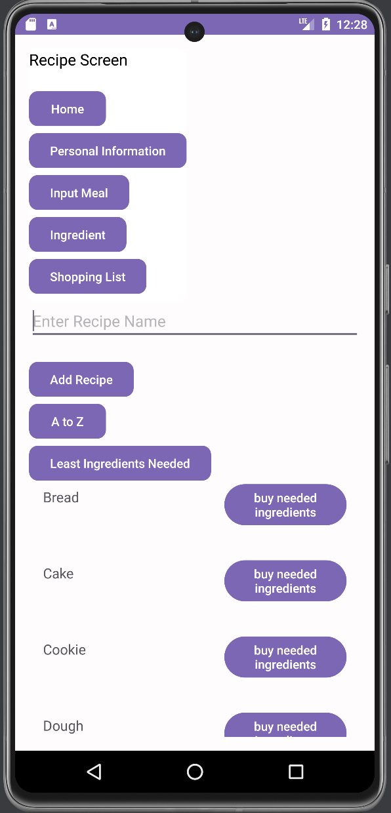
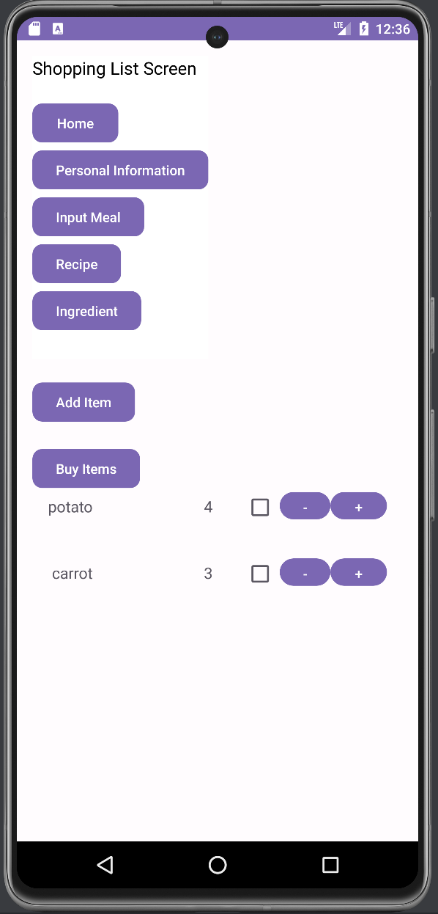
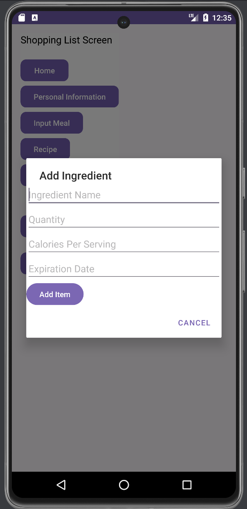

The Greenplate app serves as a way to allow the user to effectively manage their meals while meeting their calorie goals. The app is beneficial for those wanting to adopt a healthier lifestyle and develop a sustainable diet with ingredients and recipes that are readily available to the user. The app simplifies the organizational process involving various recipes, allowing the user to focus on making food that meets their caloric goals and their grocery shopping. The app promotes sustainable food management by assisting the user in purchasing ingredients based on their caloric goals and desired meals. This mitigates food wastage while promoting a healthier lifestyle.
Our app follows the MVVM architecture which stands for Model View ViewModel architecture. This architecture is used for full-stack applications that have a UI component and a backend logic component and helps with separating the two parts. This model is popular on many full stack applications especially mobile applications like Android Studio, which is what we used for our framework. The model represents the backend logic of the code, the view represents the frontend UI elements, and the ViewModel is the middle-man that connects both parts to create an effective app. One example when a button is clicked, the ViewModel will gather that data on the view and translate the backend logic of the button function to the data model.
The following here is our Design Class Diagram:
Main success scenario: A registered app user logs in with their account into GreenPlate and enters the meal with the calculated calories they want to track on the Input Meal screen. The system takes the meal, its expected calorie count, and the date it was logged and stores it in the user’s account for the user to track and updates the daily calorie intake by the calorie count of the meal logged.
Alternate scenarios:
We implemented the Firebase Authentication class as the singleton class in order to ensure that there was only one globally accessible, centralized point of accessing authentication features across all users. This helps maintain the consistency of authentication behavior and reusability for our app because we do not need to create new connections to external Firebase services at every sign-up request, which also reduces inconsistencies that could potentially lead to errors. Because it only needs to be created once, this also allows our app to save time and resources to perform its other functionality.
Ingredients class is a clear example of the information expert. All the attributes relating to a particular ingredient such as its name, quantity, calories per serving, and expiration date are set in this class. These attributes can also be retrieved using the getter methods also defined in the class. Encapsulation of Data: The `Ingredient` class encapsulates its data, including `name`, `quantity`, `caloriesPerServing`, and `expirationDate`, defining what an ingredient is in the application context. Providing Access Through Methods: The class provides methods to access its properties (`getName()`, `getQuantity()`, `getCaloriesPerServing()`, `getExpirationDate()`) and a method to modify its state `setQuantity()`, allowing interaction without exposing internal details.
After the splash screen the user is introduced to the login page where the user can log into their account or create their own account with an email and a password.
After logging in, the user is led to a home screen where they can navigate to see what ingredients they have in the pantry, shop for ingredients, make or search up recipes, and cook meals from recipes.
When clicking on the Personal Information button, users will be led to a screen where they can enter their height, weight, and gender to be stored.
In the ingredients screen, users can add any ingredients and view the list of ingredients they have available in their pantry. The recipes can look at what ingredients are available in the pantry and determine whether it can be cooked or not.
The recipe holds all recipes that every user can add and be viewed globally. Each recipe has a list of ingredients and has an indication of whether there are enough ingredients in the pantry to cook the recipe. Users have the option to buy missing ingredients if there aren’t enough or cook the recipe if there are enough ingredients. Cooking the recipe will result in the ingredients and the respective quantities to be subtracted from the pantry.
In the shopping list screen, users can shop for ingredients and add it to cart which will be added to the scrollable list. Once the user is satisfied with the ingredients they added. They can click on the buy button and it will add those items to the pantry. Users can add items buy clicking the add button and a popup will show up which will prompt the user of the item they want to add, the quantity, calories and expiration date.
 Through this project, our group was able to practice design patterns through the Android App project. Here were some of the contributions of our members:
Dahyun & Aishani: A lot of UI work, Firebase integration, backend logic
Anuj & Vansh: Splash screens, diagramming, website content
Saketh: Nontechnical tasks, Website infrastructure, git troubleshooting
We encountered several problems throughout this project. Here are some specific instances
But by overcoming these challenges, we have learned how to more effectively communicate and plan sprints together as a team.
Dahyun, Aishani, Saketh, Anuj and Vansh